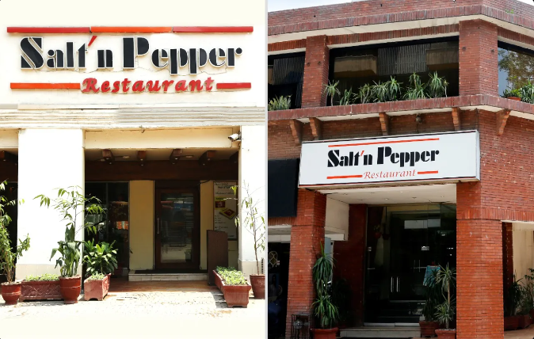
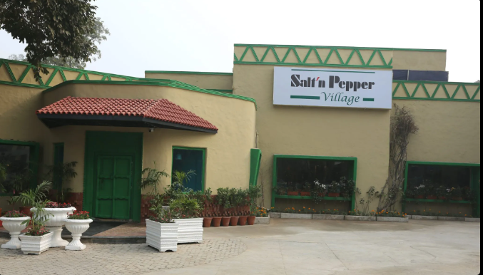
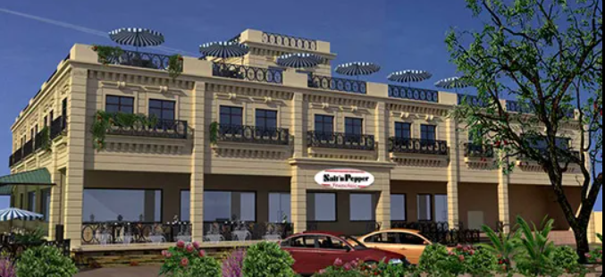
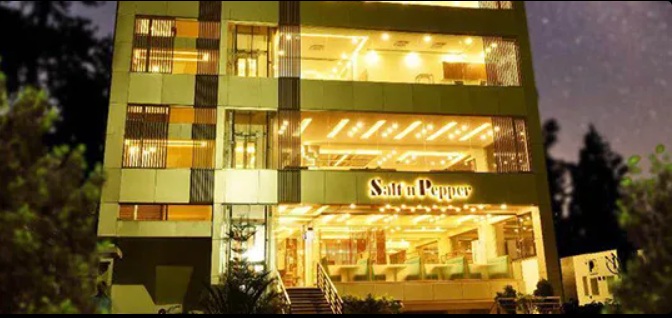
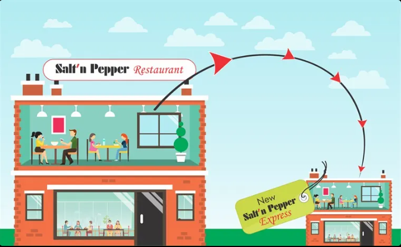
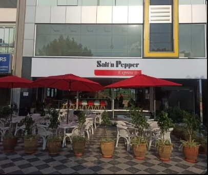
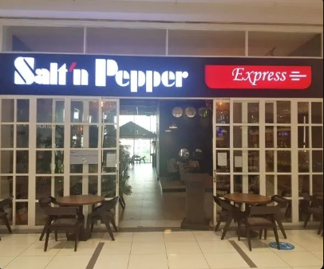
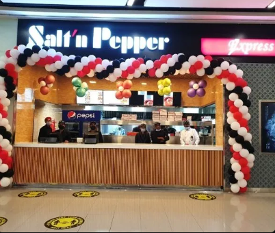

INTRODUCTION
The Salt’n Pepper is Pakistan’s most recognized and distinguished hospitality brand with a history of market innovation and excellence in restaurants
chain operation. The Salt’n Pepper Restaurants are regarded and respected as the number one restaurant entity in Pakistan.
The Salt’n Pepper Restaurants are an example of gracious dinning, outstanding service, extraordinary classic and contemporary cuisine. The
restaurants have become the ultimate dinning destinations in Lahore. From family occasions to business dinners and moments of the heart, Its a
place is where unforgettable memories are made.
The first Salt’n Pepper Restaurant on the Lahore Mall Road was established in 1983 by hotelier/restaurant entrepreneur Mahmood Akbar,
considered by many as the pioneer hotelier and restaurateur in Pakistan.
Foodconsults (Pvt.) Limited the owing company of Salt’ n Pepper Restaurants, which has its Headquarter in Lahore, prides itself on developing
Pakistan’s first national chain of restaurants. For over 3 decades, the group’s focus has been to provide their guests with an exceptional dining
experience. The group’s profile includes expertise in Pakistani and Continental cuisine, along with Fast Food.
RESTAURANTS
M/S. Foodconsults (Pvt.) Limited operates several different Salt’n Pepper Restaurants in Lahore. Each offering a unique dining experience.
The group’s chronology of success is as follows:-

SALT N PEEPER RESTAURANT
The Salt’n Pepper Restaurants at Mall and Liberty Market Lahore, are
considered to be the first proper family style restaurants in the food
industry of Pakistan. These restaurants pride themselves for being
symbolized as an eatery with a customer loyalty spanning over three
generations. As a restaurant model, these have inspired the set-up of
numerous other restaurants across Pakistan.

SALT N PEEPER RESTAURANT
The Salt’n Pepper Restaurants at Mall and Liberty Market Lahore, are
considered to be the first proper family style restaurants in the food
industry of Pakistan. These restaurants pride themselves for being
symbolized as an eatery with a customer loyalty spanning over three
generations. As a restaurant model, these have inspired the set-up of
numerous other restaurants across Pakistan.
SALT N PEEPERis also started giving franchises of its restaurant

SALT'N PEEPER ISLAMABAD
In February 2012, the first franchise of Salt’n Pepper restaurants was
opened at the prime location of Blue Area, Islamabad. It was warmly
welcomed by the residents of Islamabad as well as the neighboring towns.

SALT'N PEEPER BHAWALPUR
In February 2012, the first franchise of Salt’n Pepper restaurants was
opened at the prime location of Blue Area, Islamabad. It was warmly
welcomed by the residents of Islamabad as well as the neighboring towns.

SALT'N PEEPER FAISALABAD
In February 2012, the first franchise of Salt’n Pepper restaurants was
opened at the prime location of Blue Area, Islamabad. It was warmly
welcomed by the residents of Islamabad as well as the neighboring towns.
SALT'N PEEPER EXPRESS
Salt n Pepper – the food connoisseur every food lover cherishes. A food brand like no other

Salt’n Pepper Restaurants were founded in an effort to capitalize on the
golden opportunities created by the rapidly growing restaurant industry.
Via our franchise programme, we are focused on further expanding our
restaurant network.
Salt’n Pepper intends to give franchise rights to the interested investors
to establish Salt’n Pepper Express Restaurants in different cities of Pakistan.
The franchises shall be offered under the name of ‘Salt’n Pepper Express’
only. With our vision to evolve with changing times, we are proud to offer a smart
and practical concept as a great addition to the food chain dynamics today: Our Express Business Model comprises of a smart but compact restaurant in
terms of seating and kitchen. This condensed model will offer a menu with a
selected number of our most favorite and popular dishes from our originals
menu. You may consider it as ‘Salt n Pepper – Mini’.
SALT N PEEPER Express Franchises are operational at the following locations:



Salt’ n Pepper Express Behria Town
Salt’ n Pepper Express Packages Mall
Salt’ n Pepper Express Emporium Mall
Arwa Heights Building 19 Nishtar Block, Sector E,
Bahria Town Lahore, Near Eiffel Tower
Ph: 042 111-100-678
First Floor Packages Mall
Ph: 042 111-100-678
2nd Floor, Food Court Emporium Mall
Ph: 0311-1100947
Salt’n Pepper Village Franchise

GUJRANWALA
Salt'n Pepper Village
Adjacent to Rida Marquees /DHA Main Gate, GT Road Gujranwala Cantt
Ph: 055-3884500